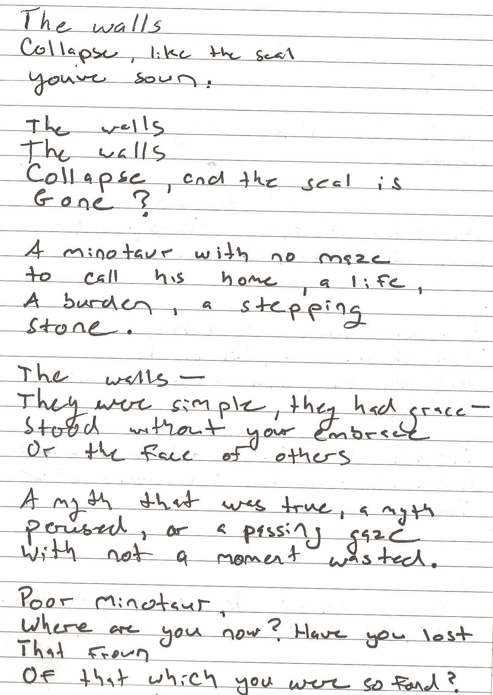

9:16 assembly — provisional

photo clip
3 s loop
3 s loop

Move --reveal from 0% to 100% to preview the write-on. The generator
uses per-line rectangles from site/data/j.json; this mask is the
editable single-rectangle approximation.